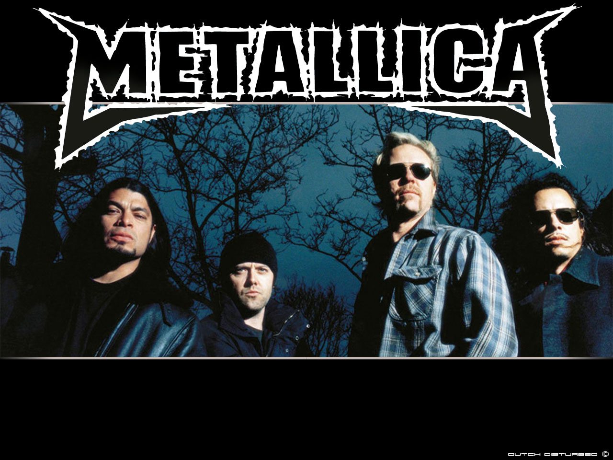

Biographie : Metallica

Metallica est un groupe de heavy metal américain originaire de Californie et considéré comme le plus grand groupe de metal de tous les temps. C’est également le groupe du style à avoir vendu le plus d’albums dans le monde. Formé à Los Angeles en 1981, le groupe est composé de James Hetfield (chant, guitare rythmique) et Lars Ulrich (batterie), ainsi que du guitariste Kirk Hammett (arrivé en 1983) et du bassiste Robert Trujillo, qui rejoindra le groupe en 2003. Les précédents membres du groupe incluent Dave Mustaine (après son exclusion, membre fondateur de Megadeth), les bassistes Ron McGovney (uniquement pour les démos), Cliff Burton (pour les trois premiers albums ; décédé en 1986) et Jason Newsted (prenant la suite de Burton et remplacé en 2003 par Trujillo). Le groupe a longtemps collaboré avec le producteur Bob Rock, qui a produit leurs albums de 1990 à 2003 et est devenu temporairement le bassiste studio intérimaire du groupe, entre le départ de Newsted et l'arrivée de Trujillo. Le groupe se forme au début des années 1980 lorsque Hetfield se rend à une annonce postée dans un journal local par le batteur Lars Ulrich.
Metallica est renommé entre autres pour sa musique metal, rapide et puissante, qui le place comme le leader des « Big Four of Thrash » (l'un des quatre plus grands groupes de thrash metal) avec Slayer, Megadeth et Anthrax. Le groupe s'est forgé une réputation mondiale chez les fans de musique underground et chez les critiques de la presse spécialisée grâce à leurs cinq premiers albums, dont le troisième, Master of Puppets (1986), est décrit comme l'un des albums les plus influents de la scène heavy thrash metal. En 1991, le groupe accède à une plus grande popularité grâce au succès commercial de leur cinquième album éponyme — surnommé « The Black Album » — qui arrive à la première place du classement Billboard 200 dès sa sortie. Dans cet album, le groupe explore diverses voies musicales avec des tempos plus longs et des rythmes massifs, ayant attiré l'attention d'une audience plus large. Il est l'album le plus vendu du groupe et s'est écoulé à 30 millions d'exemplaires dans le monde, ce qui en fait un des albums les plus vendus de l'histoire de la musique.
Depuis sa création, Metallica a produit onze albums studio, quatre albums live, cinq EP, 25 vidéoclips et 37 singles. Le groupe a remporté neuf Grammy Awards et a classé cinq albums consécutifs directement à la première place du Billboard 200. Il se classe comme un des groupes les plus rentables de tous les temps, avec plus de 200 millions de disques vendus dans le monde2,3. Metallica a également été classé comme l'un des meilleurs groupes musicaux dans un bon nombre de magazines spécialisés, dont Rolling Stone qui le classe 61e dans son Top 100 des meilleurs groupes de tous les temps2.
En 2012, Metallica fonde son propre label discographique indépendant, Blackened Recordings, et acquiert tous les droits de ses albums en studio. En 2014, Nielsen Soundscan annonce que l'album Metallica est devenu le premier depuis 1991 et le début de l'ère Soundscan4 à dépasser les 16 millions d'exemplaires vendus aux États-Unis, faisant de lui l’œuvre musicale la plus achetée, tous genres confondus (chiffre dépassé depuis par l'album Come On Over de Shania Twain sorti en 1997 et vendu à 17 millions d'exemplaires)5. En 2016, selon le magazine Billboard, Metallica est le 3e plus gros vendeurs de disques aux États-Unis depuis 1991 avec 54,26 millions d'unités écoulées - derrière la star de la musique country Garth Brooks (69,52 millions) et les Beatles (65,55 millions)6.